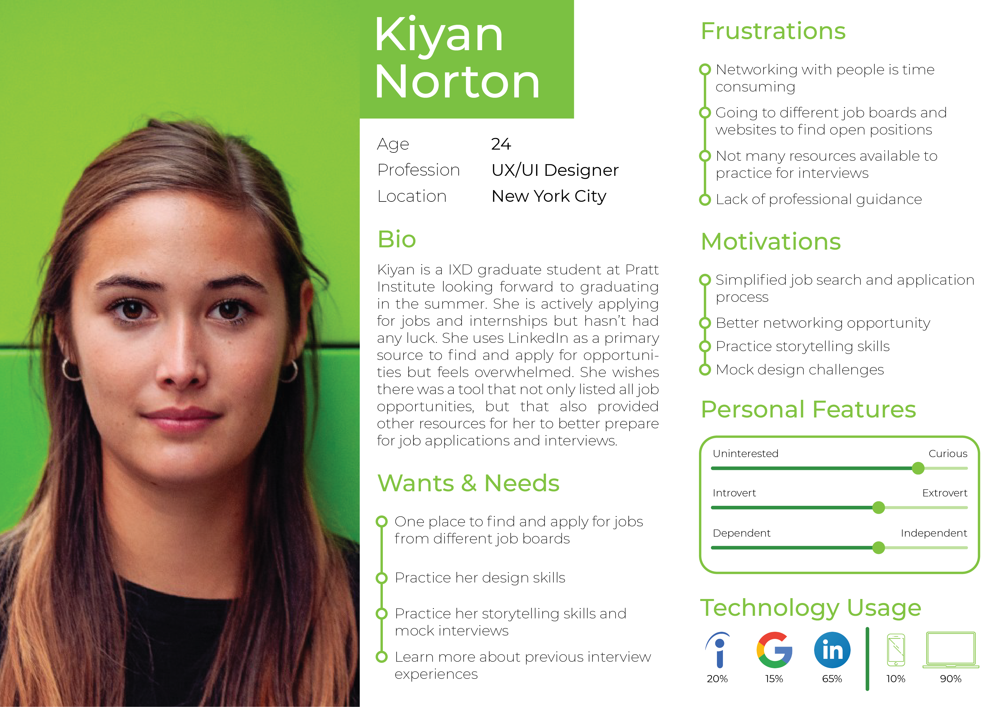
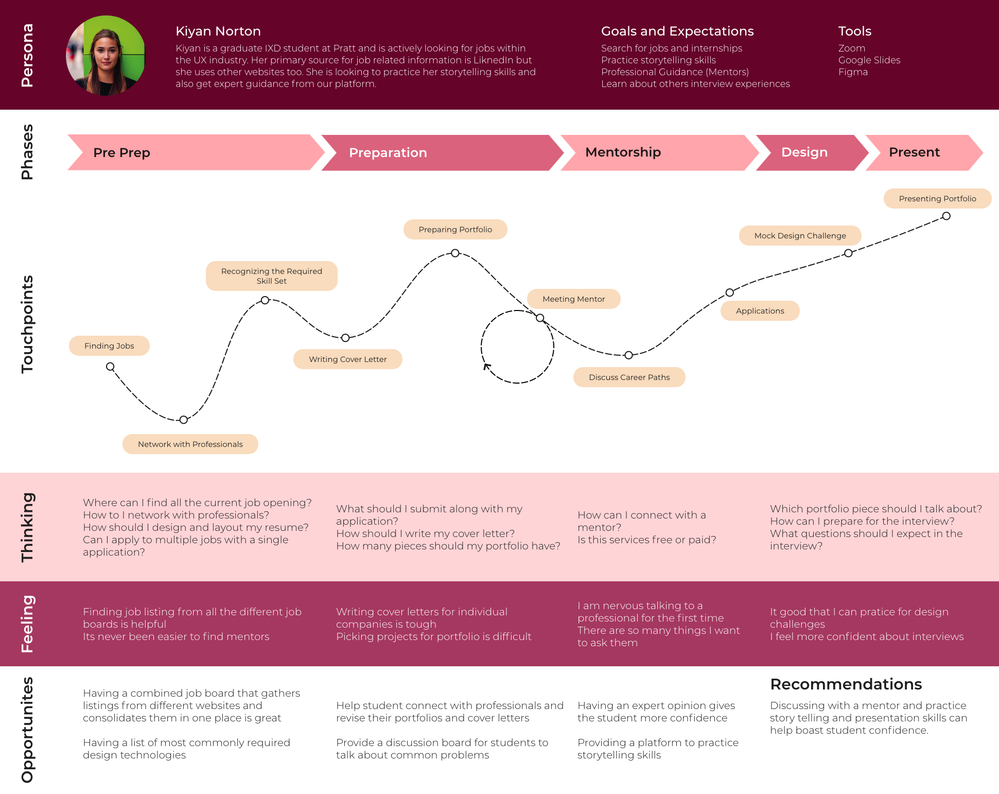
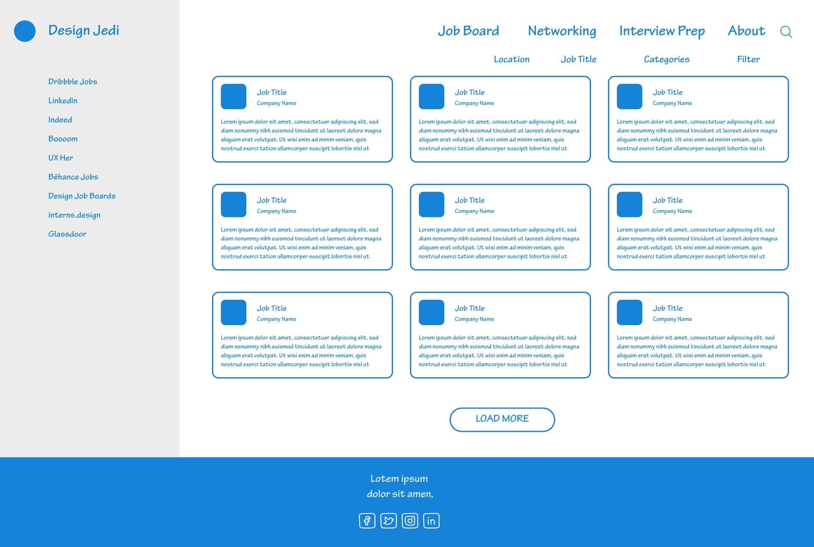
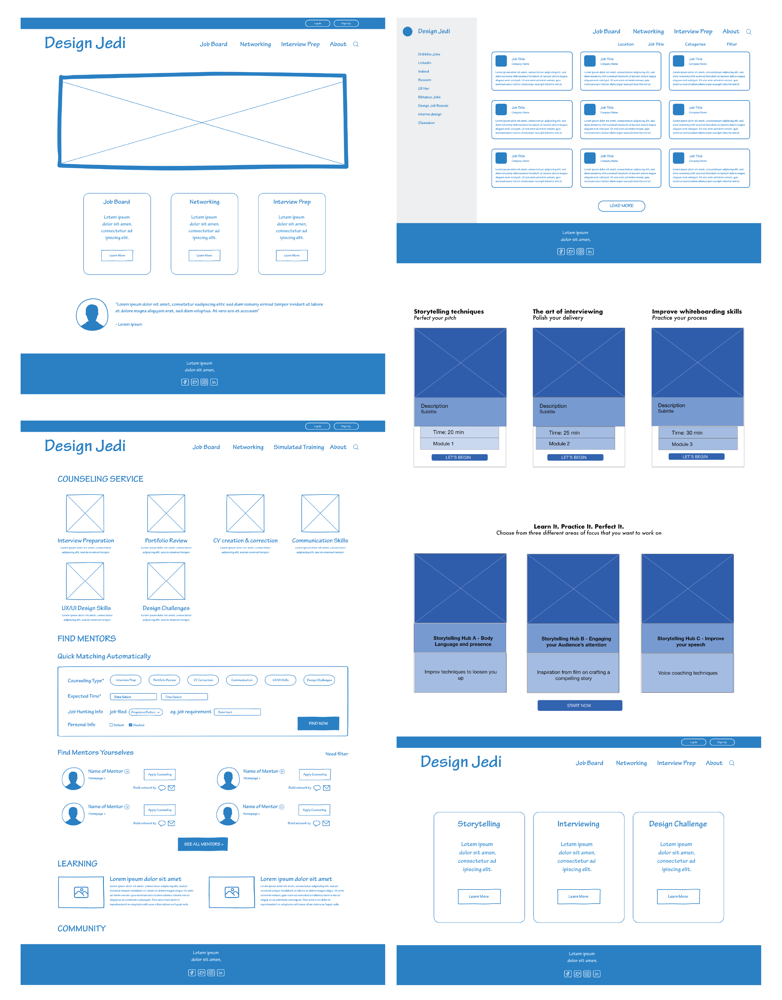
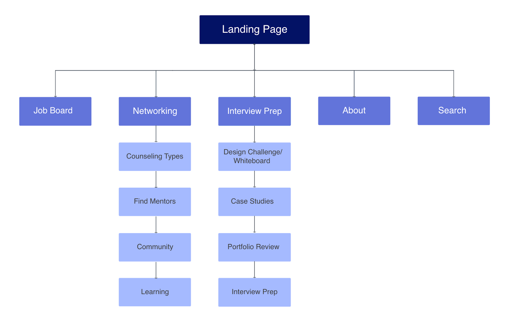
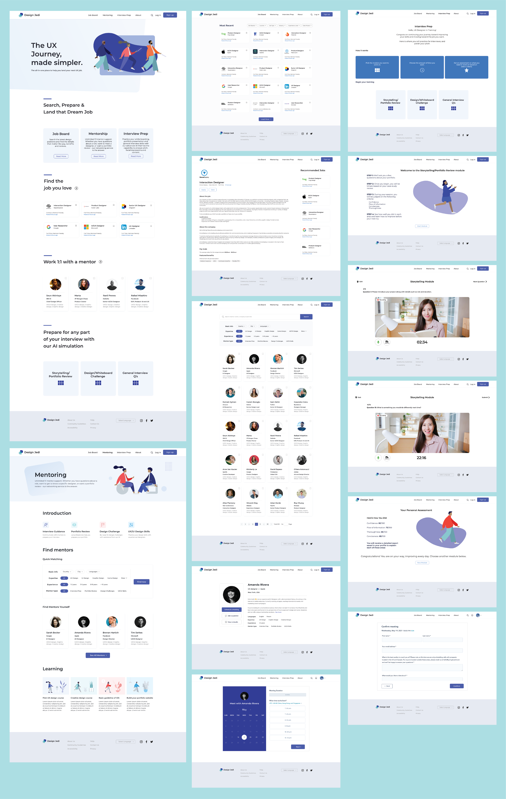

A consolidated job hunting and interview preparation platform built for entry-level UX designers — bringing job aggregation, storytelling practice, and mentorship into one coherent product.
Being entry-level designers ourselves, we felt the acute absence of consolidated resources for design students navigating job hunts and interview prep. Thousands of job boards exist — but none are built specifically for the design community. Interview practice tools are scattered. Mentorship connections happen by luck.
We asked ourselves one question: Where do UX designers go to find jobs, practice presentation skills, tackle design challenges, and prepare for interviews — all in one place?
We combined qualitative data from 9 remote interviews with UX design students and recent graduates to gain a deeper understanding of their current job-hunting process. Participants were recruited through LinkedIn and Slack channels focused on the UX community.
After preliminary research, we ran a comparative analysis of existing tools, brainstormed wireframes, developed a style guide, built a high-fidelity prototype, and conducted 5 usability tests.


We benchmarked Design Jedi against LinkedIn and Glassdoor across four dimensions: target user fit, creativity of concept, design quality, and information architecture clarity.
Our analysis confirmed that while LinkedIn and Glassdoor serve broad professional audiences, neither is purpose-built for the needs of entry-level UX designers — leaving a clear opportunity.
Our participants had developed sophisticated personal systems for navigating job hunts — meticulous about reviewing listings, setting alerts, and building LinkedIn connections. The remote work environment had actually reduced some interviewing anxiety. But several pain points emerged consistently.
Each team member sketched one feature according to their assigned user flow. I owned the Job Board feature — designing the initial wireframe and running a quick one-person test to validate the hypothesis before moving to digital.




After an extensive research process, multiple iterations, and a final round of usability tests, we arrived at a design that passed both functional and experiential validation.
— Interact with the Design Jedi prototype →Design Jedi was a deeply personal project — we were solving problems we lived ourselves. That proximity made the research richer, but also required active effort to avoid confirmation bias and ensure our insights reflected the broader user group, not just our own frustrations.